7.100.000visualizzazioni · dato fornito da Organiq
I progetti Organiq
Social. Identità. Web.
Social. Identità. Web.
Il lavoro prende forma.
Dai contenuti social ai loghi, fino ai siti web. Scegli una categoria ed esplora i progetti realizzati.
I migliori risultati
Storie che hanno viaggiato lontano.
Visualizzazioni aggiornate manualmente, non in tempo reale.
2.000.000visualizzazioni · dato fornito da Organiq
1.700.000visualizzazioni · dato fornito da Organiq
1.300.000visualizzazioni · dato fornito da Organiq
700.000visualizzazioni · dato fornito da Organiq
400.000visualizzazioni · dato fornito da Organiq
Scorri per esplorare
Anteprima del totale · dato da confermareLe nostre storie.
Le nostre storie.
Milioni di volte.
25.000.000
Visualizzazioni sui profili dei nostri clienti
Simulazione grafica: +600 ogni 3 secondi. Non è una misurazione in tempo reale.
Progetti web · Landing page
Dalle idee alle pagine online.
Tre attività, tre identità. Esplora i siti realizzati da Organiq.
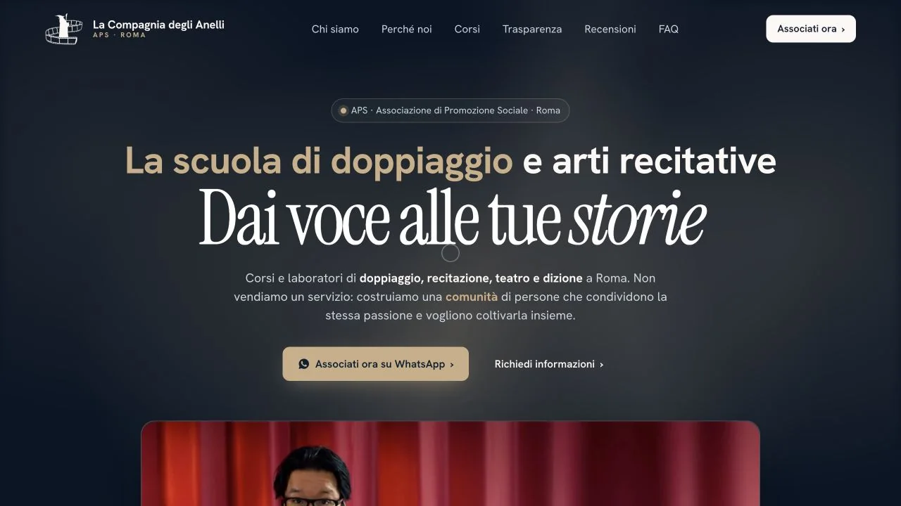
La Compagnia degli Anelli
Una pagina per scoprire la scuola, esplorare i corsi e richiedere informazioni.
Esplora il sito (si apre in una nuova scheda)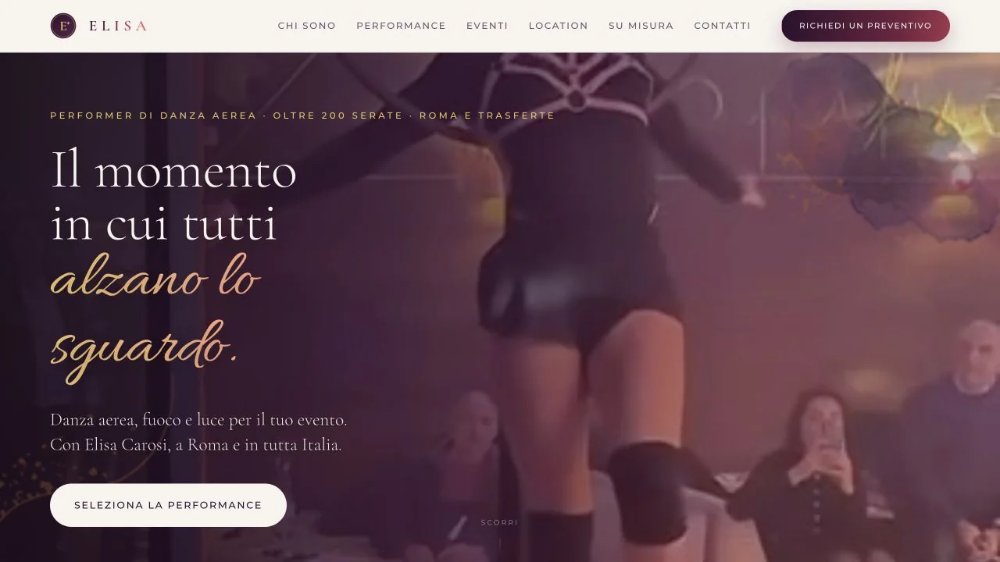
Elisa Carosi
Un sito dedicato alla danza aerea e agli spettacoli con il fuoco per matrimoni ed eventi.
Esplora il sito (si apre in una nuova scheda)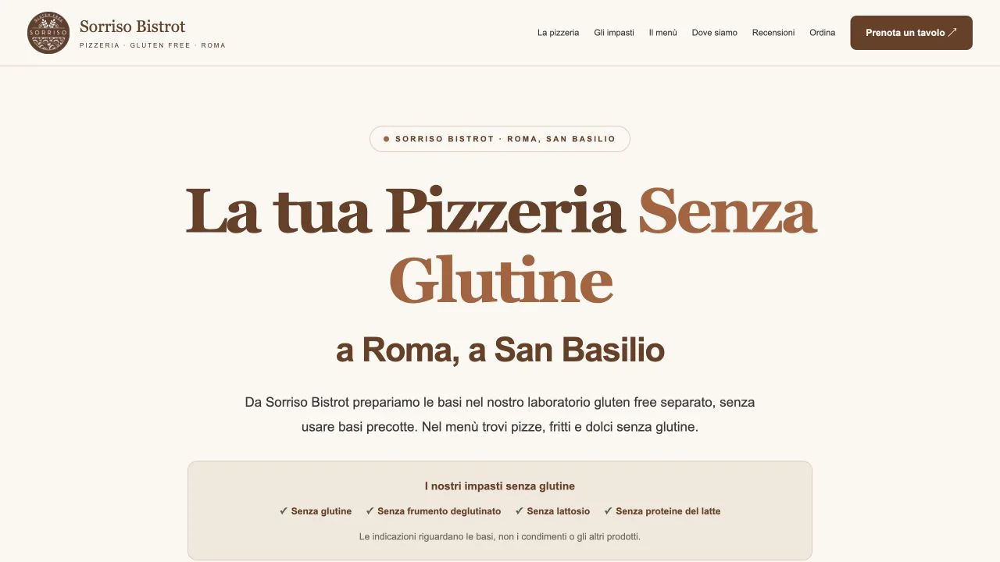
Sorriso Bistrot
La presenza online di una pizzeria senza glutine a Roma: proposta, locale e contatti.
Esplora il sito (si apre in una nuova scheda)Brand identity · Lavori selezionatiUn’identità che si riconosce.
Un’identità che si riconosce.
Su ogni superficie.
Dal ridisegno del logo alle regole del brand: ecco alcuni progetti realizzati da Organiq.
Prima · SP Motors
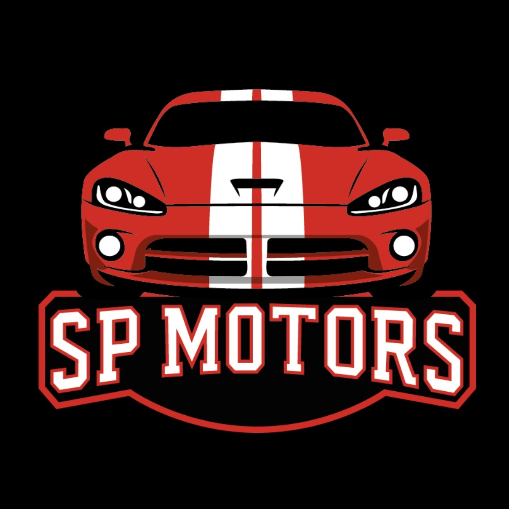
Dopo · LT Motori
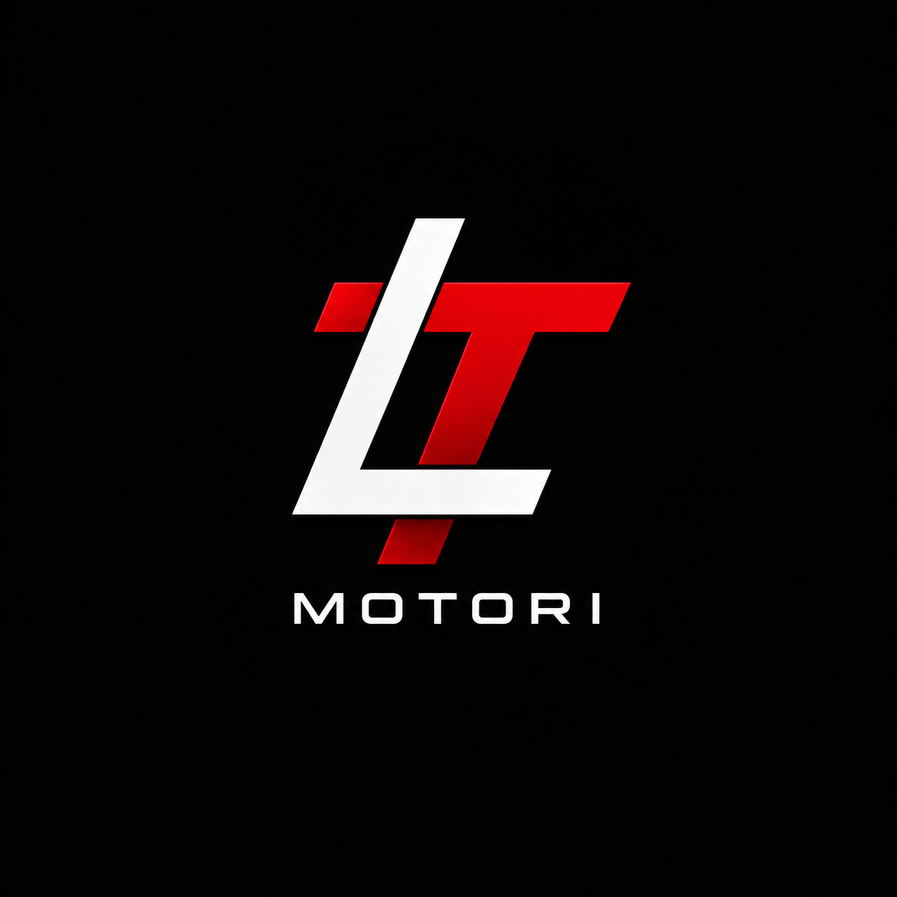
Prima
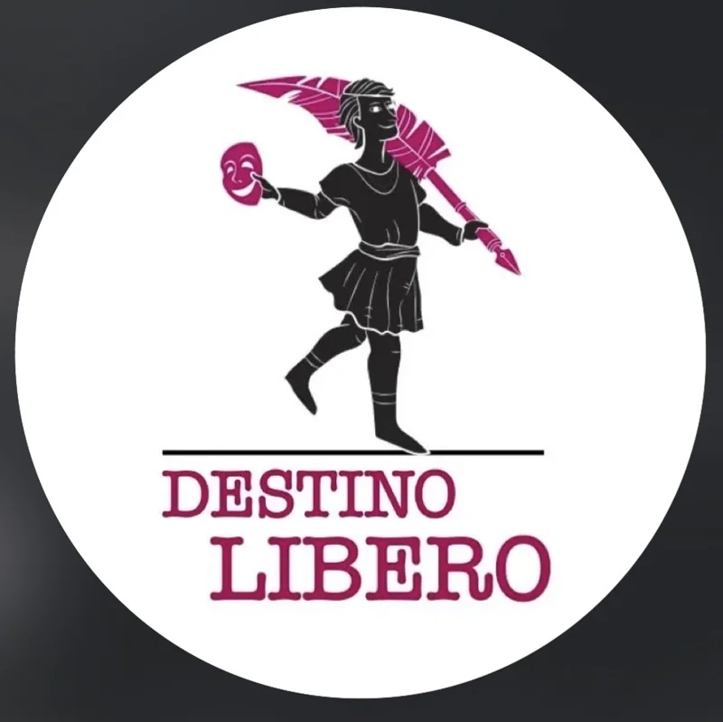
Dopo
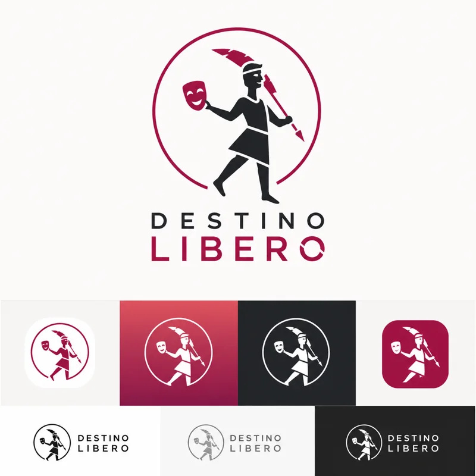
Prima
Dopo
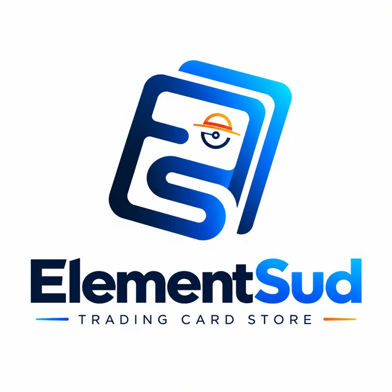
Prima
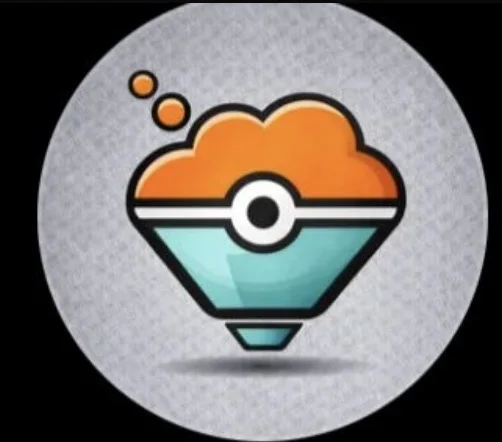
Dopo
Caso studio · LT Motori
Sfoglia il brandbook ↗Il logo è solo l’inizio.
Un sistema coordinato per materiali aziendali, sito e social. Esplora le applicazioni e il manuale completo.

LT Motori · Brandbook V1 · PDF, 14 pagine.
Caso studio · Voemi
Sfoglia il brandbook ↗Un’identità fatta di carta.
Dal logo alle interfacce: un linguaggio visivo ispirato alla carta, con palette, tipografia, componenti e proposte di schermate coordinati.
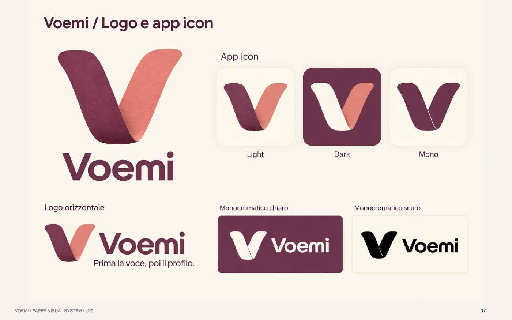
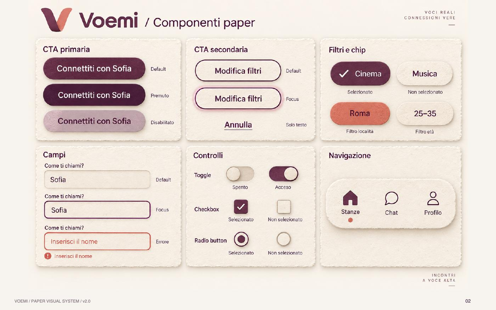
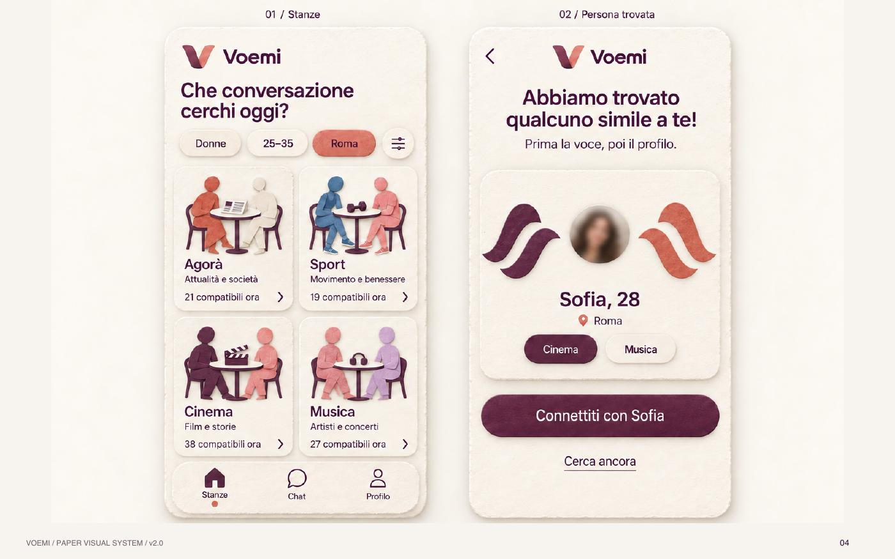
Voemi · Brandbook Paper v2.0 · PDF, 32 pagine · 39 MB.
Scopri i video. Entra nel progetto.
Una selezione di contenuti Instagram e TikTok, cliente per cliente.
Guarda le anteprime e premi play per caricare il video ufficiale. Puoi anche aprirlo su Instagram o TikTok.
Leone Master School
Formazione, eventi e persone: contenuti che raccontano la scuola e la sua community.
Leonardo Leone
il profilo personale di un imprenditore trasformato in un canale di autorevolezza e acquisizione.
Io Creo Il Mio Destino
la community di un percorso formativo, alimentata con contenuti costanti e riconoscibili.
Cosplus3D
designer di maschere per artisti: 42.000 follower costruiti con contenuti riconoscibili.
Crybaby.ely
performer e cosplayer: community da 19.300 follower attivi.
Out Of Mana
Collettivo di creator: reel organici, tra cui un video da 7,1 milioni di visualizzazioni.
Dentisti Marrapese
Profilo avviato da zero: contenuti video su Instagram e TikTok, con risultati fino a centinaia di migliaia di visualizzazioni.
Teatro Destino Libero
dal profilo vuoto a una platea coinvolta in meno di due settimane.
I nuovi avvii.
Sorriso Bistrot
Un bistrot che si racconta ogni giorno: contenuti food e sala che portano le persone al tavolo.
SP Motors
Concessionaria a Roma: storytelling di auto e motori, su Instagram e TikTok.
La Compagnia Degli Anelli
La voce è il prodotto: contenuti che fanno sentire — letteralmente — la qualità della scuola.
Luca Monti — Ironman
La disciplina di un atleta Ironman raccontata giorno per giorno: un personal brand che ispira e aggrega.